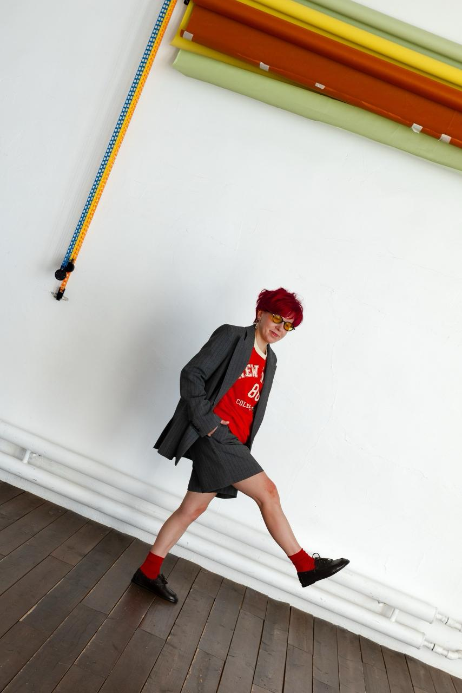
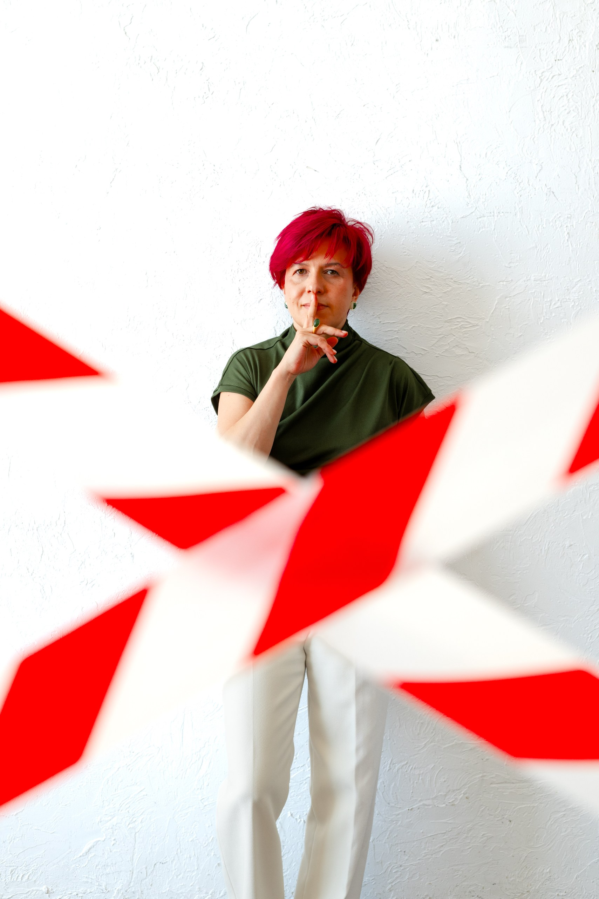
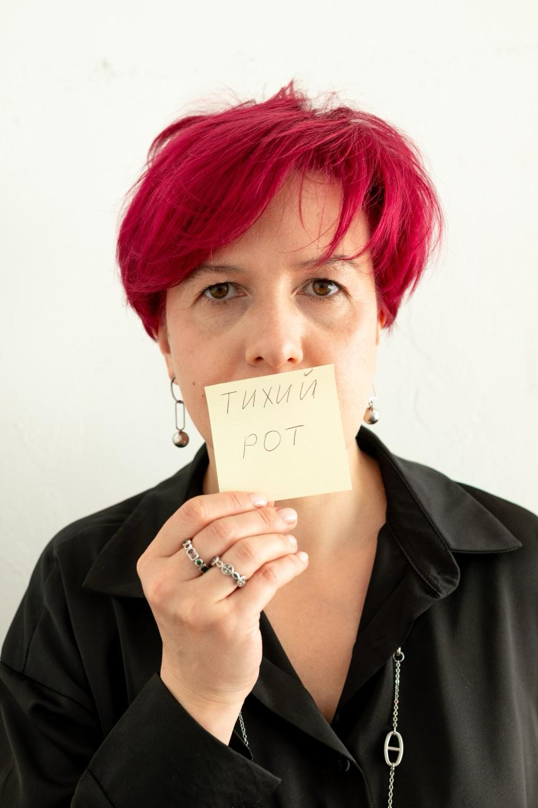

Санкт-Петербург
Супервизия для ABA-специалистов. Консультации для родителей детей с особенностями развития. Санкт-Петербург и онлайн.
«Я хочу, чтобы качественная помощь была доступна везде. Поэтому я обучаю специалистов — и поднимаю стандарт в профессии.»— Ирина Астафьева

Поведенческий аналитик · Супервизор · ABA
Я прихожу на работу и чувствую физическое ощущение счастья. Работаю с детьми с особенностями развития и с теми, кто этих детей сопровождает. От качества работы специалиста зависит жизнь ребёнка — поэтому не делаю скидок ни себе, ни тем, кого обучаю.
Прямо и честно про АВА-терапию. Иду к тому, чтобы быть лучшим специалистом в своей сфере — и делаю это планомерно каждый день.
Только методы с доказанной эффективностью. Никакой «авторской методики» без научной базы.
Говорю прямо — что реально, что нет. Не обещаю того, чего не может быть.
Стандарт — высокий. Для себя и для тех, кого обучаю. Потому что за каждым специалистом стоят его ученики.
Нет универсальных программ. Каждый ребёнок и каждый специалист — отдельная история.
Пишете на почту или оставляете заявку на сайте. Коротко — о ситуации, о том, что нужно.
Первичная встреча: понимаем запрос, договариваемся о формате. Без лишних обязательств.
Супервизия, консультация или проект — в выбранном формате. Конкретно, измеримо, в срок.
Чёткие рекомендации. Человек уходит зная, что делать дальше — и возвращается снова.
Услуги
Четыре формата — для специалистов, родителей и команд. Каждый под конкретный запрос.
Разбираем сложные случаи, анализируем данные, выстраиваем программы. Для тех, кто хочет работать правильно и расти в профессии.
Для специалистов ABA / психологовПомогаю разобраться в поведении ребёнка, выстроить стратегию дома и в школе. Без воды, прямо и честно.
Для родителей детей с особенностямиФормат для команд и небольших групп специалистов. Совместный разбор случаев, методическая поддержка.
Для команд и группИнтенсивы, мастер-классы, тематические встречи. Анонсы актуальных мероприятий — здесь на сайте.
Следите за анонсамиСтоимость
Фиксированная стоимость. Формат и частоту обсуждаем на первой встрече.
Разовая встреча
За сессию / 1 час
Регулярно
За встречу · раз в 2 недели
Еженедельно
За встречу · каждую неделю
Для родителей
За сессию
Групповые супервизии — по запросу. Стоимость и формат обсуждаются индивидуально.
С кем работаю
Работаю с детьми с разными особенностями развития — подход адаптируется под каждый конкретный случай.
Аутизм, синдром Аспергера, атипичный аутизм и другие состояния спектра.
Нарушения внимания, трудности с переключением и удержанием, двигательная расторможенность.
Нарушения коммуникации и речи разной степени, темповые задержки когнитивного и эмоционального развития.
Трудности в адаптации, обучении бытовым и социальным навыкам, выраженные задержки когнитивного развития.
Агрессия, самоповреждение, разрушительное поведение, сложности с учебным поведением в группе или классе.
Для кого
ABA-терапевты, психологи, дефектологи — те, кто хочет работать лучше и профессиональнее. Супервизия — это не проверка, это возможность расти.
Вы устали от противоречивых советов. Хотите понять своего ребёнка и знать, что делать. Говорю прямо — без лишнего, с уважением к вашей ситуации.
Отзывы
Участник группового проекта
«Проходила обучение практическим навыкам летом прошлого года. Было классно, динамично, максимально структурировано. Получила много практического материала: разбирали конкретные ситуации по видео, разные кейсы. Очень понравилось. Ирина — кладезь знаний!»
Специалист · ABA
«Мне было безумно полезно на каждой из встреч! Очень много инсайтов взяла для себя. Мне очень импонирует то, как ты загораешься каждым кейсом и сразу ищешь решение. Было очень приятно, что ты открыто делишься своими лайфхаками и фишечками!»
Специалист · Логопед
«Ирина, спасибо за указанный путь. Теперь я действительно могу не просто проводить занятие, а видеть успехи каждое занятие. Раньше мне казалось, что многие мои дети просто ходят потому что положено. Сейчас я могу сделать для них столько важного. Могу научить их учиться.»
Специалист · Супервизор
«Проект оказался для меня очень своевременным. Я только что сдала экзамен на международную сертификацию и поняла, что теперь могу сама стать супервизором — а как? В данном проекте мы узнаём «как». Ирина очень внимательна и бережна по отношению к участникам.»


Мероприятия
Тренинги, семинары, групповые программы — анонсы ближайших событий.
Международный тренинг от организации Autism Partnership — одного из мировых лидеров в области ABA. Практический интенсив для специалистов и всех интересующихся прикладным анализом поведения.
31 августа — 5 сентября 2026 · Санкт-Петербург · Очно
Стоимость участия — от 100 000 ₽. Расписание и регистрация — скоро.
Подробнее →Проект для кураторов и супервизоров, которые хотят научиться вести своих супервизируемых к результату — быстро и эффективно.
Подробнее →Онлайн-курс для родителей детей с особенностями развития — основы ABA, стратегии поведения, практические инструменты.
Скоро →Частые вопросы
ABA (прикладной анализ поведения) — это наука о поведении. Всё что делает живой организм — это поведение, а значит его можно изменять с помощью прикладного анализа. В отличие от многих других методов, ABA опирается на измеримые данные и доказанную эффективность, а не на интуицию. ABA — один из немногих методов, вошедших в клинические рекомендации «расстройство аутистического спектра» Минздрава РФ.
Методы ABA подходят любому человеку, который хочет быстро и эффективно обучаться. Именно поэтому в коррекционной педагогике ABA так востребована — если у ребёнка есть особенности или задержки развития, нужно выбирать самые быстрые и эффективные методы. Подход адаптируется под каждого — не существует универсальной программы.
Лекции дают теорию, тренинги — практические навыки и технику. Супервизия — это разбор реальных случаев из вашей практики. Вы приходите с конкретной ситуацией и уходите с конкретным решением. Кроме того, супервизия прокачивает ваше клиническое мышление, умение анализировать ситуации и принимать решения в моменте.
Первая встреча — знакомство. Вы рассказываете о ситуации, я задаю уточняющие вопросы. Вместе определяем запрос и формат дальнейшей работы. Никаких обязательств до того, как оба поймём, что это подходит.
Индивидуальные и групповые супервизии доступны онлайн. Практические тренинги — только очно.
Зависит от запроса. Для разбора одного случая может хватить 1–2 встреч. Для системного сопровождения — несколько месяцев. Обсуждаем на первой встрече.
Контакт
Напишите на почту или позвоните — отвечу и договоримся о встрече.
Документы